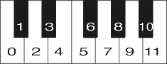

Stoikheion Calculator
Stoikheion Oracle

0
1
2
3
4
5
6
7
8
9
10
11
Type your set here:
Forte name:
Subset:
cardinality
Trichords
Tetrachords
Pentachords
Hexachords
Septachords
Octachords
Nonachords
Superset:
cardinality
Trichords
Tetrachords
Pentachords
Hexachords
Septachords
Octachords
Nonachords
T0
T1
T2
T3
T4
T5
T6
T7
T8
T9
T10
T11
T0I
T1I
T2I
T3I
T4I
T5I
T6I
T7I
T8I
T9I
T10I
T^11^I
Matrix
T-matrix
T-matrix with y-inversion
I-matrix
I-matrix with y-inversion
Download SETS
Download BOOK
How to use
©
Normal form:
Prime form:
ic vector:
Z-Mate:
Solomon name:
Common name:
n values for T
n
invariance:
n values for T
n
I invariance:
Subsets:
Supersets:
Matrix:
Copy Text from Test1 to Test2
Copy Text from Test1 to Test2
Copy to Test2